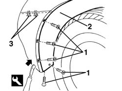
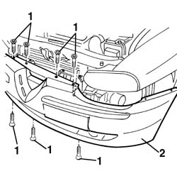
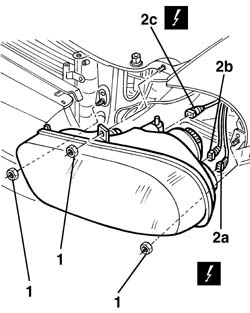
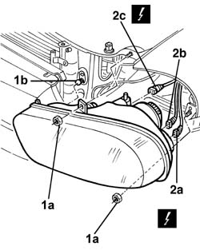

5540B16 FRONT LIGHT CLUSTER with direction indicator (one), left or right - R.R.
- Path
- Procedures > 55 ELECTRICAL EQUIPMENT > 5540 EXTERIOR LIGHTING > 5540B headlamps > 5540B16 FRONT LIGHT CLUSTER with direction indicator (one), left or right - R.R.
- Kind
- repair procedure (removal / refitting; the operation number is the code)
- Applies to
- all engines; all production periods
- Interactive page
- https://sloeber94.github.io/elrnDB-a156/en/#/3238445
Applies to: all engines; production: fino a 03/98, da 04/98 a 02/99, da 03/99 a 01/00, da 02/00 a 01/01, da 02/01 a 02/02
 Removing
Removing
 Refitting
Refitting7055A43 central front grille - r r
7055A41 RIGHT FRONT GRILLE - R.R. (left and right)
It is advisable to place the vehicle on a lift.
1. Undo the bolts fixing the end of the front bumper.
2. Release the wheel arch liner from the front bumper using the special tool in the area where the bolts were removed.
 | Name | Country |
|---|---|---|
2 | Scraper blade | 1.823.014.000 |
3. Working from the bottom, undo the two bolts securing the bumper to the wing.

Applies to: all engines; production: fino a 03/98, da 04/98 a 02/99, da 03/99 a 01/00, da 02/00 a 01/01, da 02/01 a 02/02
1. Undo the centre bolts fastening the bumper.
2. Move the bumper slightly and support it appropriately.

Applies to: all engines; production: fino a 03/98, da 04/98 a 02/99, da 03/99 a 01/00, da 02/00 a 01/01, da 02/01 a 02/02
1. Undo the three nuts fastening the headlamp.
2. Move the headlamp and disconnect the electrical connections (2a, 2b, 2c).
 | Name | Connector |
|---|---|---|
2a | Left headlamp |
| Name | Connector |
|---|---|---|
2b | Left headlamp |
| Name | Connector |
|---|---|---|
2b | Right headlamp |
| Name | Connector |
|---|---|---|
2b | Right headlamp |
| Name | Connector |
|---|---|---|
2c | Left headlamp alignment corrector motor |
| Name | Connector |
|---|---|---|
2c | Right headlamp alignment corrector motor |

Applies to: all engines; production: fino a 03/98, da 04/98 a 02/99, da 03/99 a 01/00, da 02/00 a 01/01, da 02/01 a 02/02
Refitting
RemovingCheck that the lamp is not damaged.
Connect the electrical connections and refit the lamp.
Tighten the three headlamp fixing nuts.
Reposition the side part of the bumper.
Tighten the centre bolts fastening the bumper.
Working from the bottom, tighten the two bolts securing the bumper to the wing.
Fit the wheel arch liner on the front bumper.
Tighten the bolts securing the ends of the front bumper.
7055A41 RIGHT FRONT GRILLE - R.R. (left and right)
Applies to: all engines; production: fino a 03/98, da 04/98 a 02/99, da 03/99 a 01/00, da 02/00 a 01/01, da 02/01 a 02/02, da 03/02 a 09/03
Removing
Refitting7055A43 central front grille - r r .
7055A41 RIGHT FRONT GRILLE - R.R. (right and left).
1. Undo the bolts fixing the end of the front bumper.
2. Release the wheel arch liner from the front bumper using the special tool in the area where the bolts were removed.
| Name | Country |
|---|---|---|
1 | Scraper blade | 1.823.014.000 |
3. Working from the bottom, undo the two bolts securing the bumper to the wing.
Applies to: all engines; production: fino a 03/98, da 04/98 a 02/99, da 03/99 a 01/00, da 02/00 a 01/01, da 02/01 a 02/02, da 03/02 a 09/03
1. Undo the bumper's central bolts.
2. Move the bumper slightly and support it appropriately.
Applies to: all engines; production: fino a 03/98, da 04/98 a 02/99, da 03/99 a 01/00, da 02/00 a 01/01, da 02/01 a 02/02, da 03/02 a 09/03
1. Undo the two nuts (1a) securing the light cluster and release the bolt from the retainer (1b).
2. Move the light cluster and disconnect the electrical connections (2a, 2b, 2c).
| Name | Connector |
|---|---|---|
2a | Left headlamp |
| Name | Connector |
|---|---|---|
2b | Left headlamp |
| Name | Connector |
|---|---|---|
2c | Left headlamp alignment corrector motor |
| Name | Connector |
|---|---|---|
2a | Right headlamp |
| Name | Connector |
|---|---|---|
2b | Right headlamp |
| Name | Connector |
|---|---|---|
2c | Right headlamp alignment corrector motor |

Applies to: all engines; production: fino a 03/98, da 04/98 a 02/99, da 03/99 a 01/00, da 02/00 a 01/01, da 02/01 a 02/02, da 03/02 a 09/03
Refitting
RemovingCheck that the light cluster is not damaged.
Connect the electrical connections and refit the light cluster.
Tighten the two nuts fastening the light cluster and attach the bolt on the retainer.
Reposition the side part of the bumper.
Tighten the bumper's central bolts.
Working from the bottom, tighten the two bolts securing the bumper to the wing.
Fit the wheel arch liner on the front bumper.
Tighten the bolts securing the ends of the front bumper.
7055A41 RIGHT FRONT GRILLE - R.R. (left and right)
Topics linked from this page (9)
- 5540B38 headlamp/light cluster light beam - position
- 7055A41 RIGHT FRONT GRILLE - R.R.
- 7055A43 central front grille - r r
- F10A Left headlamp ( FRONT )
- F10B Left headlamp ( CROSSMEMBER )
- F11A Right headlamp ( ABS )
- F11B Right headlamp ( ABS )
- N30 Left headlamp alignment corrector motor ( FRONT )
- N31 Right headlamp alignment corrector motor
Topics that link to this page (19)
- 1020D36 flywheel end oil seal - replace for manual gearbox with hydraulic selection versions
- 1020D38 flywheel side oil seal - replace
- 1024B10 engine flywheel - r + r for versions with manual gearbox
- 1024B11 engine flywheel - r r for manual gearbox with hydraulic selection versions
- 1048A21 filter input sleeve - r r
- 1048A23 cold air intake - r r
- 1048B22 air delivery sleeve from heat exchanger to intake manifold - r + r
- 1048B48 heat exchanger duct - r r
- 1048B50 turbo charger intercooler - r + r
- 1088B24 engine cooling radiator - r r for air conditioned versions
- 1088E11 fans with single engine duct - r+r
- 1810A28 clutch - r r for manual gearbox with hydraulic selection versions
- 2110A10 manual gearbox and differential - r + r
- 2110A11 manual gearbox with differential - r r for versions with hydraulic selection
- 2127C10 support for hydraulic circuit reservoir and system pump - r r
- 2127C18 pipe from hydraulic circuit fluid reservoir to hydraulic speed selection drive pump - r r
- 2127C20 pipe frompump to hydraulic speed selection actuator unit - r r
- 2127C30 hydraulic speed selection system pump - r r
- 5550C30 l/h or r/h front turn signal (one) - r+r